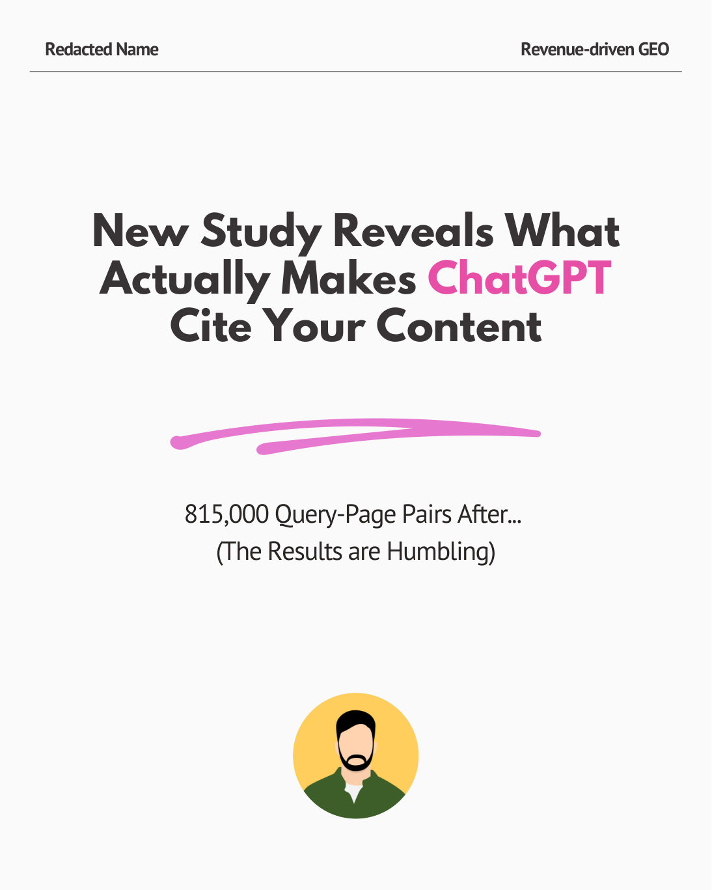
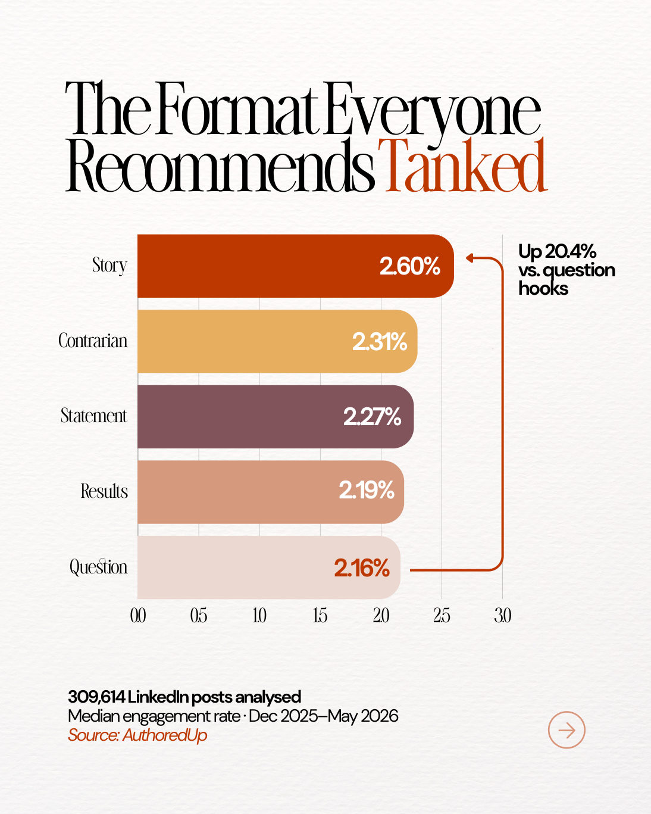

Selected work
See what the finished work looks like.
The visual direction changes with the person and the idea. The reader should still be able to move through the carousel without getting lost or working too hard to understand the point.

Client case study
A long newsletter became a 23-slide carousel.
Favour brought the source material. I rewrote the script, selected what deserved space and designed the full deck.

B2B SaaS founder
Research-led thought leadership from scratch.
The founder supplied brand assets. I researched the topic, developed the content and designed the carousel.

Editorial process in practice
21.6K+ impressions and 223+ saves.
Here is how my own carousels perform when I apply the same editorial and design process.